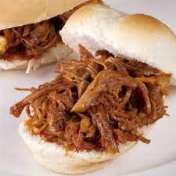

Servings: 3
Prep time: 30 minutes

Ingredients
- 1 onion, finely chopped
- 3/4 cup ketchup
- 3 tablespoons of tomato paste
- 1/4 cup apple cider vinegar
- 1 teaspoon of paprika
- 1 teaspoon of garlic powder
- 1 teaspoon of mustard powder
- 1 tsp of cumin
- 1 3-4lb pork shoulder, trimmed of excess fat
- Kosher salt and ground pepper to taste
- Coleslaw and buns for serving
Instructions
- Combine onion, ketchup, tomato paste, apple cider vinegar and spices in the bowl of a slow cooker. Season pork shoulder all over with salt and pepper then add to slow cooker, covering it with ketchup mixture. Cover and cook until very tender (the meat should fall apart easily with a fork!), on HIGH for 5 to 6 hours or on LOW for 8 to 10 hours.
- Remove pork from slow cooker and transfer to bowl. Shred with two forks and toss with juices from the slow cooker. Serve on buns with coleslaw.